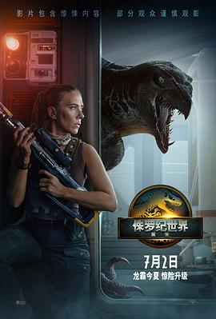

5.7
侏罗纪世界：重生
Jurassic World: Rebirth
2025
美国
评分 5.7
导演:
加里斯·爱德华斯
演员:
斯嘉丽·约翰逊 / 马赫沙拉·阿里 / 乔纳森·贝利 / 鲁伯特·弗兰德 / 艾德·斯克林 / 曼努埃尔·加西亚-鲁尔福 / 卢娜·布雷斯
类型:
冒险,动作,惊悚,科幻
剧情简介
《侏罗纪世界：重生》的故事发生在《侏罗纪世界3》之后的第五年。那场全球恐龙失控的灾难已成旧闻，人类学会与远古巨兽“共存”——至少表面如此。影片开场，一艘科研潜艇驶向太平洋深处的一座孤岛，那里据传栖息着最后一批纯种恐龙。科学家玛雅（斯嘉丽·约翰逊 饰）受命前往采集DNA样本，却发现这些生物的体内隐藏着一种能够重启人类细胞的神秘基因。与此同时，退役特种兵卡勒布（马赫沙拉·阿里 饰）率领的雇佣小队被秘密雇佣进入岛屿，他们的目标不是保护科研团队，而是为幕后财团夺取样本。荒岛之夜电闪雷鸣，雨雾中传来低沉咆哮，摄像机一晃，巨大的翼龙掠过天际，脚下的地面随着雷龙的脚步震动。加里斯·爱德华斯以其擅长的宏大镜头语言将恐惧与震撼融合，每一次远景都在提醒人类——自己从来不是这片土地的主人。随着岛屿深处的探索推进，科研与军工之间的界限逐渐模糊。玛雅发现，他们所寻找的“治愈基因”，正是早已灭绝的暴虐霸王龙与人类DNA的结合产物。镜头切换至夜幕下的实验仓，闪烁的红光映出巨兽的轮廓，空气中混合着血腥与湿热气息。人类的贪婪与恐惧在这片新伊甸园再次爆发。当岛屿火山复苏、通讯中断、船只被掀翻，幸存者被迫与时间赛跑。玛雅在丛林中奔跑，背后是咆哮追击的异种暴龙；卡勒布举起火把，在雨夜中看见恐龙护幼的温柔瞬间。影片将恐龙的残暴与生命的韧性并置，形成一种悲壮的共鸣——灭绝从不是终点，重生也不一定是希望。这部作品让人重新思考《侏罗纪》系列的核心命题：当科技再次赋予灭绝生命，人类能否承担“造物者”的代价？当最后一声咆哮回荡在燃烧的岛屿上，观众心中留存的不是恐惧，而是一种微妙的敬畏。